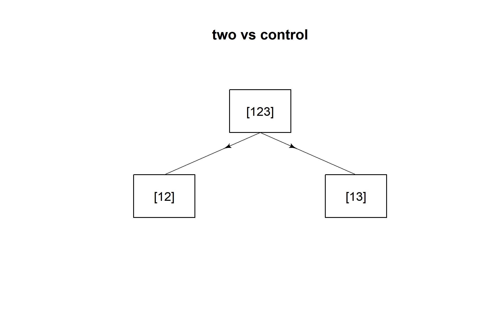
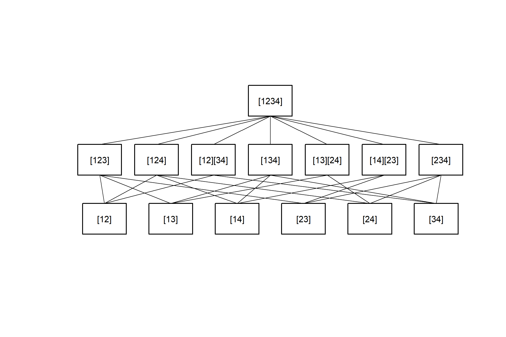

Closed Testing Procedure
Paul Jordan
2021-03-13
closed_testing_procedure.RmdThe Closure Principle
The closure principle is a way to protect the type-I error from multiple testing. Here, we follow the description in (Bretz, Hothorn, T., and Westfall, P. 2011). It consists of four steps:
Definition of a set \({H} = \{H_1,\ldots, H_n\}\) of elementary hypotheses.
Construction of the closure set (“Hypothesis Tree”).
\[\overline{H} = \left \{ H_I =\bigcap_{i \in I}H_i : \quad I \subseteq \{1,\ldots,n\} \right \} \] \[(\text{all intersection hypotheses} H_I ).\]
Construction of a local level-\(\alpha\) test for each \(H_I \in \overline{H}\).
Rejection of \(H_i\), if all null hypotheses \(H_I \in \overline{H}\) with \(i \in I\) are rejected at at the local level \(\alpha\).
Adjusted p-values
As the null hypothesis \(H_i\) is rejected only if the null hypotheses \(H_I \in \overline{H}\) with \(i \in I\) are rejected (see point 4. above), the adjusted p-value \(p_{adj;i}\) for \(H_i\) is defined as:
- Denote with \(p_I\) the p-value for a given intersection hypothesis \(H_I, \quad I \subseteq \{1, \ldots,n\}\).
- Then, \(p_{adj;i}=\max_\limits{I:i\in I} p_I,\quad i=1,\ldots , n\).
Implementation
The package was designed in partcular for treatment comparisons in ANOVA-like situations.
Closure set
The hypothesis tree of the closed testing procedure is created using the function IntersectHypotheses.
Local tests for a given “hypothesis tree”
In the case of single hypotheses (i.e. if the hypothesis can be described by a single integer vector e.g. (1,3,5) the test (F-Test, Kruskal-Wallis-test, probability test, logrank test, ….) is applied directly.
For combined hypotheses (i.e. for hypotheses described by several non-overlapping integer vectors eg. (1,2), (3,4), The procedure differs for (generalised) linear hypotheses and other tests.
In the case of generalised linear hypotheses, the contrast matrices for the single hypotheses included are combined and these contrasts are tested simultaneously. Henceforth, functions from the package emmeans(Russell and Lenth 2020) are used, as for all othe linear and generalised linear hypotheses. For all other tests, first the p-values \(p_1, p_2, \ldots ,p_m\) for the single hypotheses are calculated, and then these are combined by Fisher’s combination rule:
If all \(m\) hypotheses are assumed to be independent, the test statistics \(X\) follows under \(H_0\) a \(\chi^2\)-distribution with \(2m\) degrees of freedom: \[ X=-2\sum_{i=1}^{m}\ln(p_i) \sim \chi_{2m}^2\] from which a p-value for the global hypothesis can be easily obtained.
In the case of trend tests, the same type of test is applied for all intermediate single tests.
Adjusted p-values
Finally the p-values for the elementary hypotheses are adjusted by calculating the maximum of the p-values from the hypotheses in the testing set of the respective hypothesis.
The function AnalyseCTP calculates all local p-values and the adjusted p-values for all elementary hypotheses.
With the function Adjust_raw, it is also possible to use p-values that have been calculated by other functions or software to calculate the adjusted p-values.
Testing set for a specific elementary hypothesis
The testing set for a specific elementary hyothesis can be printed by the function TestingSet.
library(CTP)
Pairwise <- IntersectHypotheses(list(c(1,2), c(1,3),
c(1,4), c(2,3), c(2,4), c(3,4)))
Set24 <- TestingSet(Pairwise,"[24]")
Set24
## [1] "[24]" "[124]" "[13][24]" "[234]" "[1234]"Comparing means
The dataframe pasi comprises the changes in PASI-score (Psoriasis Area and Severity Index) from baseline within two month in 72 patients treated with three different doses of Etretin or Placebo in a double blind study.
The elementary hypotheses 1:2, 1:3, 1:4 are tested simultaneously using the F-Test i.e. \(H_1: \mu_1=\mu_2\), \(H_2: \mu_1=\mu_3\) and \(H_3: \mu_1=\mu_4\) simultaneously. The groups with levels 2,3 and 4 are compared to the control (Placebo) group (level 1). In this specific example, the adjusted and unadjusted p-values are the same. All doses show a significant effect compared to Placebo.
library(CTP)
data(pasi)
three.to.first <- IntersectHypotheses(list(1:2,c(1,3),c(1,4)))
Display(three.to.first,Type="s",arrow=TRUE)
pasi.ctp.F1 <- AnalyseCTP(three.to.first,pasi.ch~dose,pasi)
summary(pasi.ctp.F1)
##
## Summary of Closed Testing Procedure
## ===================================
##
## Model : pasi.ch ~ dose , test : F
##
## Factor levels: 1=Placebo, 2=ET.10mg, 3=ET.25mg, 4=ET.50mg
##
## Elementary Hypotheses and p-values
## ----------------------------------
##
## Hypothesis raw p-value adj. p-value
## [12] 4.748e-03 4.748e-03
## [13] 2.737e-05 1.063e-04
## [14] 1.826e-06 9.797e-06
Display(pasi.ctp.F1)
Another hypothesis structure
Testing the elementary hypotheses 1:2, 2:3, 3:4 simultaneously using the F-Test, i.e. testing \(H_1: \mu_1=\mu_2\), \(H_2: \mu_2=\mu_3\) and \(H_3: \mu_3=\mu_4\) simultaneously. This provides quite different results (compared to pasi.ctp.F1): No further improvement for higher doses.
dose.steps4 <- IntersectHypotheses(list(1:2,2:3,3:4))
Display(dose.steps4,arr=TRUE)
pasi.ctp.F2 <- AnalyseCTP(dose.steps4,pasi.ch~dose,pasi)
summary(pasi.ctp.F2)
##
## Summary of Closed Testing Procedure
## ===================================
##
## Model : pasi.ch ~ dose , test : F
##
## Factor levels: 1=Placebo, 2=ET.10mg, 3=ET.25mg, 4=ET.50mg
##
## Elementary Hypotheses and p-values
## ----------------------------------
##
## Hypothesis raw p-value adj. p-value
## [12] 0.004748 0.01506
## [23] 0.113879 0.11388
## [34] 0.525687 0.52569
Display(pasi.ctp.F2)
Other tests
For the same hypothesis structure, other tests can also be used:
Generalized Linear Models
As an example, a positive response is defined as a change from baseline PASI score greater than 50. The new variable Resp has then the value 1 if pasi.ch > 50 or 0 otherwise. The corresponding model is chosen to be a generalised linear model with logit-link, as implemented in glm.
pasi$Resp <- ifelse(pasi$pasi.ch > 50,1,0)
pasi.ctp_bin <-AnalyseCTP(three.to.first,Resp~dose,pasi,test.name="glm",family="binomial")
summary(pasi.ctp_bin)
##
## Summary of Closed Testing Procedure
## ===================================
##
## Model : Resp ~ dose , test : glm
##
## Test options: family : binomial
##
## Factor levels: 1=Placebo, 2=ET.10mg, 3=ET.25mg, 4=ET.50mg
##
## Elementary Hypotheses and p-values
## ----------------------------------
##
## Hypothesis raw p-value adj. p-value
## [12] 0.036876 0.036876
## [13] 0.001952 0.005163
## [14] 0.001577 0.003370Kruskal-Wallis test of trend for all single hypotheses
pasi.ctp.K <- AnalyseCTP(dose.steps4,pasi.ch~dose,pasi, test="kruskal")
summary(pasi.ctp.K)
##
## Summary of Closed Testing Procedure
## ===================================
##
## Model : pasi.ch ~ dose , test : kruskal
##
## Factor levels: 1=Placebo, 2=ET.10mg, 3=ET.25mg, 4=ET.50mg
##
## Elementary Hypotheses and p-values
## ----------------------------------
##
## Hypothesis raw p-value adj. p-value
## [12] 0.0235 0.05605
## [23] 0.1655 0.16554
## [34] 0.4255 0.42546
Display(pasi.ctp.K)
Jonckheere-Terpstra test of trend for all single hypotheses
pasi.ctp.J1 <- AnalyseCTP(dose.steps4,pasi.ch~dose,pasi, test="jonckheere",alternative="increasing")
summary(pasi.ctp.J1)
##
## Summary of Closed Testing Procedure
## ===================================
##
## Model : pasi.ch ~ dose , test : jonckheere
##
## Test options: alternative : increasing
##
## Factor levels: 1=Placebo, 2=ET.10mg, 3=ET.25mg, 4=ET.50mg
##
## Elementary Hypotheses and p-values
## ----------------------------------
##
## Hypothesis raw p-value adj. p-value
## [12] 0.01179 0.05652
## [23] 0.08284 0.08284
## [34] 0.21415 0.21415Proportions
The data set colorectal contains the response rates from a dose finding study in metastatic colorectal cancer. Two doses of the experimental drug were compared to the standard treatment. The response rates in the two dose groups are compared to the control responder rate using both, the \(\chi^2\)-test and Fisher’s exact test.
two.to.first<- IntersectHypotheses(list(1:2,c(1,3)))
Display(two.to.first,Type="s",main="two vs control",arrow=TRUE)
#The two elementary hypotheses are tested after comparing the three proportions globally.
data(colorectal)
colorectal.ctp <-AnalyseCTP(two.to.first,responder~dose,data=colorectal, test="prob")
summary(colorectal.ctp)
##
## Summary of Closed Testing Procedure
## ===================================
##
## Model : responder ~ dose , test : prob
##
## Factor levels: 1=control, 2=low, 3=high
##
## Elementary Hypotheses and p-values
## ----------------------------------
##
## Hypothesis raw p-value adj. p-value
## [12] 0.02018 0.04459
## [13] 0.09877 0.09877
Display(colorectal.ctp,Type="t")
colorectal.chisq <-AnalyseCTP(two.to.first,responder~dose,data=colorectal, test="chisq")
summary(colorectal.chisq, digits=1)
##
## Summary of Closed Testing Procedure
## ===================================
##
## Model : responder ~ dose , test : chisq
##
## Factor levels: 1=control, 2=low, 3=high
##
## Elementary Hypotheses and p-values
## ----------------------------------
##
## Hypothesis raw p-value adj. p-value
## [12] 0.03 0.05
## [13] 0.11 0.11Survival Analysis with the logrank test
This example uses the sample dataset ovarian from the package survival. The overall survival curves of the two treatments rx do not differ significantly:
library(survival)
data(ovarian)
print(survdiff(Surv(futime,fustat)~rx, data=ovarian))
## Call:
## survdiff(formula = Surv(futime, fustat) ~ rx, data = ovarian)
##
## N Observed Expected (O-E)^2/E (O-E)^2/V
## rx=1 13 7 5.23 0.596 1.06
## rx=2 13 5 6.77 0.461 1.06
##
## Chisq= 1.1 on 1 degrees of freedom, p= 0.3Together with the performance subgroups ecog=1 and ecog=2 , a factor “subgroups” defined by the combinations of the performance measure ecog.ps and the treatment rx.
ovarian$subgroups <- as.factor(10*ovarian$ecog.ps+ovarian$rx)
print(head(ovarian))
## futime fustat age resid.ds rx ecog.ps subgroups
## 1 59 1 72.3315 2 1 1 11
## 2 115 1 74.4932 2 1 1 11
## 3 156 1 66.4658 2 1 2 21
## 4 421 0 53.3644 2 2 1 12
## 5 431 1 50.3397 2 1 1 11
## 6 448 0 56.4301 1 1 2 21Then, the treatment differences within the performance subgroups ecog=1 and ecog=2 are compared. I.e. the elementary hypotheses are subgroup11=subgroup12 and subgroup21=subgroup22 or \(\{(1,2),(3,4)\}\).
comb.sub <- IntersectHypotheses(list(c(1,2),c(3,4)))
#Display(comb.sub)
ovar.ctp <-AnalyseCTP(comb.sub,Surv(futime,fustat)~subgroups, ovarian, test="lgrank")
summary(ovar.ctp)
##
## Summary of Closed Testing Procedure
## ===================================
##
## Model : Surv(futime, fustat) ~ subgroups , test : lgrank
##
## Factor levels: 1=11, 2=12, 3=21, 4=22
##
## Elementary Hypotheses and p-values
## ----------------------------------
##
## Hypothesis raw p-value adj. p-value
## [12] 0.1119 0.3171
## [34] 0.8434 0.8434
Display(ovar.ctp)
Comparing means when a covariate is included
In a study with diabetes type II patients (dataset glucose), three doses of a drug are compared to a placebo. The primary variable is the change of fasting plasma glucose from baseline. Fasting plasma glucose at baseline is included into the model as covariate (only implemented for linear and generalised linear models).
data(glucose)
glucose.ctp <- AnalyseCTP(three.to.first,GLUCOSE.CHANGE~GLUCOSE.BLA+DOSE,
data=glucose, factor.name="DOSE")
summary(glucose.ctp)
##
## Summary of Closed Testing Procedure
## ===================================
##
## Model : GLUCOSE.CHANGE ~ GLUCOSE.BLA + DOSE , test : F
##
## Factor levels: 1=PLACEBO, 2=LOW, 3=MEDIUM, 4=HIGH
##
## Elementary Hypotheses and p-values
## ----------------------------------
##
## Hypothesis raw p-value adj. p-value
## [12] 6.033e-02 0.0603256
## [13] 7.086e-05 0.0003536
## [14] 6.917e-05 0.0003464
Display(glucose.ctp,Type="s")
Large hypothesis trees
Whith an increasing number of hypotheses to test, the graphical display may become quite confusing:
G <- factor(rep(1:5,each=4) )
y <- rnorm(20)
Y <- data.frame(G,y)
xxx <- IntersectHypotheses(list(1:2,c(1,3),c(1,4),c(1,5),c(2,5),c(3,4)))
summary(xxx)
##
## Hypotheses to be tested
## =======================
##
## hyp.no level hypothesis.name
## 1 1 [12]
## 2 1 [13]
## 3 1 [14]
## 4 1 [15]
## 5 1 [25]
## 6 1 [34]
## 1 2 [123]
## 2 2 [124]
## 3 2 [125]
## 4 2 [12][34]
## 5 2 [134]
## 6 2 [135]
## 7 2 [13][25]
## 8 2 [145]
## 9 2 [14][25]
## 10 2 [15][34]
## 11 2 [25][34]
## 1 3 [1234]
## 2 3 [1235]
## 3 3 [12345]
## 4 3 [1245]
## 5 3 [125][34]
## 6 3 [1345]
## 7 3 [134][25]
## 1 4 [12345]
##
## Connection structure of the hypotheses
## ======================================
##
## Level Connection
## 1 [12] -> [123]
## 1 [12] -> [124]
## 1 [12] -> [125]
## 1 [12] -> [12][34]
## 1 [13] -> [123]
## 1 [13] -> [134]
## 1 [13] -> [135]
## 1 [13] -> [13][25]
## 1 [14] -> [124]
## 1 [14] -> [134]
## 1 [14] -> [145]
## 1 [14] -> [14][25]
## 1 [15] -> [125]
## 1 [15] -> [135]
## 1 [15] -> [145]
## 1 [15] -> [15][34]
## 1 [25] -> [125]
## 1 [25] -> [13][25]
## 1 [25] -> [14][25]
## 1 [25] -> [25][34]
## 1 [34] -> [12][34]
## 1 [34] -> [134]
## 1 [34] -> [15][34]
## 1 [34] -> [25][34]
## 2 [12][34] -> [1234]
## 2 [12][34] -> [12345]
## 2 [12][34] -> [125][34]
## 2 [123] -> [1234]
## 2 [123] -> [1235]
## 2 [123] -> [12345]
## 2 [124] -> [1234]
## 2 [124] -> [12345]
## 2 [124] -> [1245]
## 2 [125] -> [1235]
## 2 [125] -> [12345]
## 2 [125] -> [1245]
## 2 [125] -> [125][34]
## 2 [13][25] -> [1235]
## 2 [13][25] -> [12345]
## 2 [13][25] -> [134][25]
## 2 [134] -> [1234]
## 2 [134] -> [12345]
## 2 [134] -> [1345]
## 2 [134] -> [134][25]
## 2 [135] -> [1235]
## 2 [135] -> [12345]
## 2 [135] -> [1345]
## 2 [14][25] -> [12345]
## 2 [14][25] -> [1245]
## 2 [14][25] -> [134][25]
## 2 [145] -> [12345]
## 2 [145] -> [1245]
## 2 [145] -> [1345]
## 2 [15][34] -> [12345]
## 2 [15][34] -> [125][34]
## 2 [15][34] -> [1345]
## 2 [25][34] -> [12345]
## 2 [25][34] -> [125][34]
## 2 [25][34] -> [134][25]
## 3 [1234] -> [12345]
## 3 [12345] -> [12345]
## 3 [1235] -> [12345]
## 3 [1245] -> [12345]
## 3 [125][34] -> [12345]
## 3 [134][25] -> [12345]
## 3 [1345] -> [12345]
Display(xxx)
“External” p-values
It is possible to:
- Use
IntersectHypothesesto create the closure set andDisplayto plot the corresponding hypothesis tree. - Calculate the p-values for the local hypotheses with other functions or software.
- Import these p-values.
- Use
Adjust_rawto calculte the adjusted p-values for the elementary hypotheses.Adjust_rawdelivers an object of classctp. - Use
summaryandDisplayon this object.
Pairwise <- IntersectHypotheses(list(c(1,2), c(1,3), c(1,4), c(2,3), c(2,4), c(3,4)))
Display(Pairwise)
summary(Pairwise)
##
## Hypotheses to be tested
## =======================
##
## hyp.no level hypothesis.name
## 1 1 [12]
## 2 1 [13]
## 3 1 [14]
## 4 1 [23]
## 5 1 [24]
## 6 1 [34]
## 1 2 [123]
## 2 2 [124]
## 3 2 [12][34]
## 4 2 [134]
## 5 2 [13][24]
## 6 2 [14][23]
## 7 2 [234]
## 1 3 [1234]
##
## Connection structure of the hypotheses
## ======================================
##
## Level Connection
## 1 [12] -> [123]
## 1 [12] -> [124]
## 1 [12] -> [12][34]
## 1 [13] -> [123]
## 1 [13] -> [134]
## 1 [13] -> [13][24]
## 1 [14] -> [124]
## 1 [14] -> [134]
## 1 [14] -> [14][23]
## 1 [23] -> [123]
## 1 [23] -> [14][23]
## 1 [23] -> [234]
## 1 [24] -> [124]
## 1 [24] -> [13][24]
## 1 [24] -> [234]
## 1 [34] -> [12][34]
## 1 [34] -> [134]
## 1 [34] -> [234]
## 2 [12][34] -> [1234]
## 2 [123] -> [1234]
## 2 [124] -> [1234]
## 2 [13][24] -> [1234]
## 2 [134] -> [1234]
## 2 [14][23] -> [1234]
## 2 [234] -> [1234]
# the vector of p-values calculated by another software
# (Example from Prof. John M. Lachin, The Biostatistics Center Rockville MD)
p.val <- c(
0.4374,
0.6485,
0.4103,
0.2203,
0.1302,
0.6725,
0.4704,
0.3173,
0.6762,
0.7112,
0.2866,
0.3362,
0.2871,
0.4633)
result <- Adjust_raw(Pairwise, p.value=p.val)
summary(result,digits=3)
##
## Summary of Closed Testing Procedure
## ===================================
##
## Elementary Hypotheses and p-values
## ----------------------------------
##
## Hypothesis raw p-value adj. p-value
## [12] 0.437 0.676
## [13] 0.648 0.711
## [14] 0.410 0.711
## [23] 0.220 0.470
## [24] 0.130 0.463
## [34] 0.672 0.711
# details may be documented
result <- Adjust_raw(Pairwise, p.value=p.val
,dataset.name="my Data", factor.name="Factor"
,factor.levels=c("A","B","C","D"), model=y~Factor
,test.name="my Test")
summary(result,digits=3)
##
## Summary of Closed Testing Procedure
## ===================================
##
## Model : y ~ Factor , test : my Test
##
## Factor levels: 1=A, 2=B, 3=C, 4=D
##
## Elementary Hypotheses and p-values
## ----------------------------------
##
## Hypothesis raw p-value adj. p-value
## [12] 0.437 0.676
## [13] 0.648 0.711
## [14] 0.410 0.711
## [23] 0.220 0.470
## [24] 0.130 0.463
## [34] 0.672 0.711